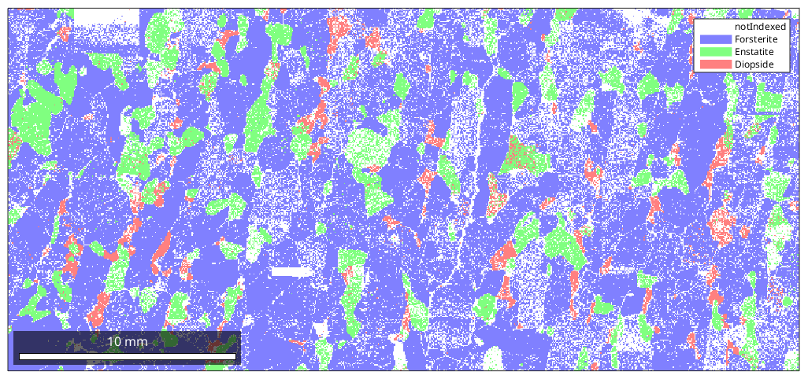
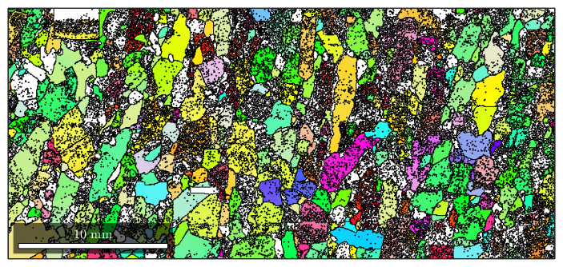
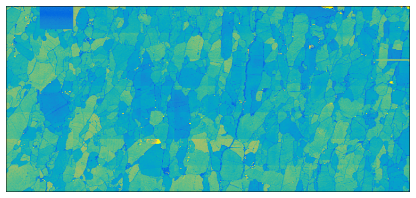
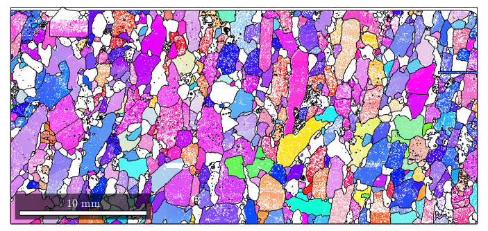
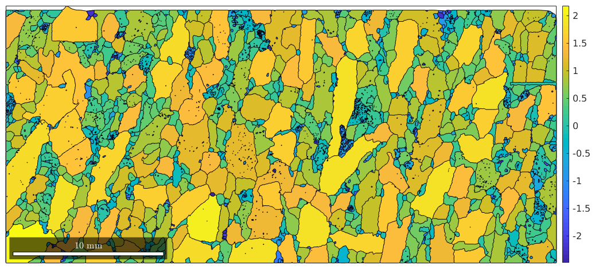
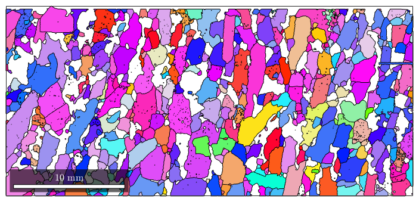
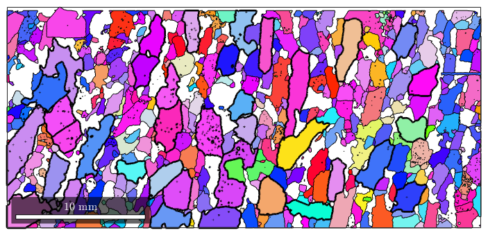
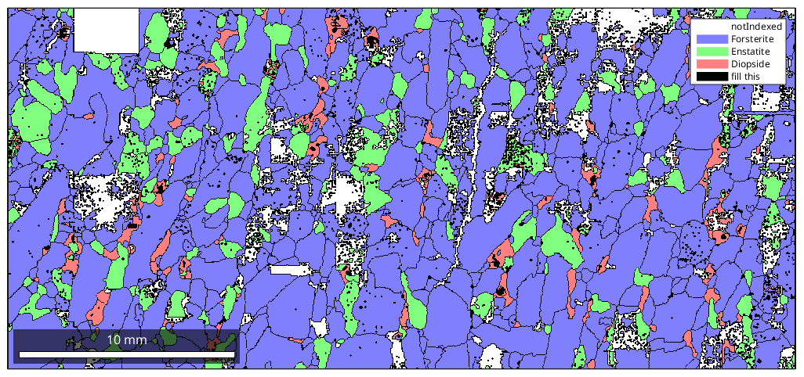
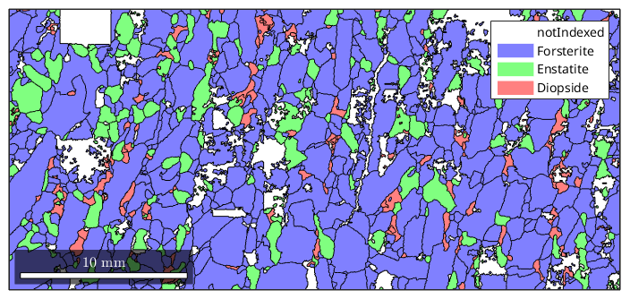
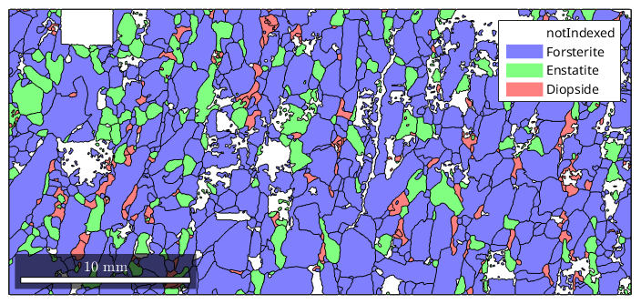

Import some EBSD data
mtexdata forsterite
plotx2east
plot(ebsd) First attempt on grain reconstruction
[grains,ebsd.grainId] = calcGrains(ebsd,'angle',5*degree);
plot(grains) The resulting grains contain a lot of holes and one pixel grains due to misindexing. A good measure for regions where indexing went wrong is the band contrast
plot(ebsd,ebsd.bc)
We see its quite low at the grain boundaries and, e.g., in the top left rectangle. Lets set the phase of measurements with bandcontrast smaller then a certain threshold to notIndexed
condition = ebsd.bc < 80;
% setting the phase to zero means notIndexed
ebsd(condition).phase = 0
plot(ebsd)
ebsd = EBSD
Phase Orientations Mineral Color Symmetry Crystal reference frame
0 71022 (29%) notIndexed
1 142934 (58%) Forsterite light blue mmm
2 23678 (9.6%) Enstatite light green mmm
3 8318 (3.4%) Diopside light red 12/m1 X||a*, Y||b, Z||c
Properties: bands, bc, bs, error, mad, x, y, grainId
Scan unit : um
 [grains,ebsd.grainId] = calcGrains(ebsd,'angle',5*degree);
plot(grains)
plot(grains,log(grains.grainSize ./ grains.boundarySize)) mtexColorbar
remove
ind = ~grains.isIndexed & log(grains.grainSize ./ grains.boundarySize) < -0.4; plot(ebsd) hold on plot(grains(ind),'faceColor',[0 0 0],'DisplayName','fill this') hold off % remove marked measurements ebsd(grains(ind)) = []
ebsd = EBSD
Phase Orientations Mineral Color Symmetry Crystal reference frame
0 7708 (4.2%) notIndexed
1 142934 (78%) Forsterite light blue mmm
2 23678 (13%) Enstatite light green mmm
3 8318 (4.6%) Diopside light red 12/m1 X||a*, Y||b, Z||c
Properties: bands, bc, bs, error, mad, x, y, grainId
Scan unit : um
 [grains,ebsd.grainId] = calcGrains(ebsd,'angle',5*degree);
plot(grains) fill grains that are to small
ind = grains.grainSize < 5; hold on plot(grains(ind),'faceColor',[0 0 0],'DisplayName','fill this') hold off % remove marked measurements ebsd(grains(ind)) = []
ebsd = EBSD
Phase Orientations Mineral Color Symmetry Crystal reference frame
0 7659 (4.3%) notIndexed
1 141968 (79%) Forsterite light blue mmm
2 23357 (13%) Enstatite light green mmm
3 6886 (3.8%) Diopside light red 12/m1 X||a*, Y||b, Z||c
Properties: bands, bc, bs, error, mad, x, y, grainId
Scan unit : um
 [grains,ebsd.grainId] = calcGrains(ebsd,'angle',5*degree);
plot(grains) Smooth grains
grains = smooth(grains,2); plot(grains)
| DocHelp 0.1 beta |